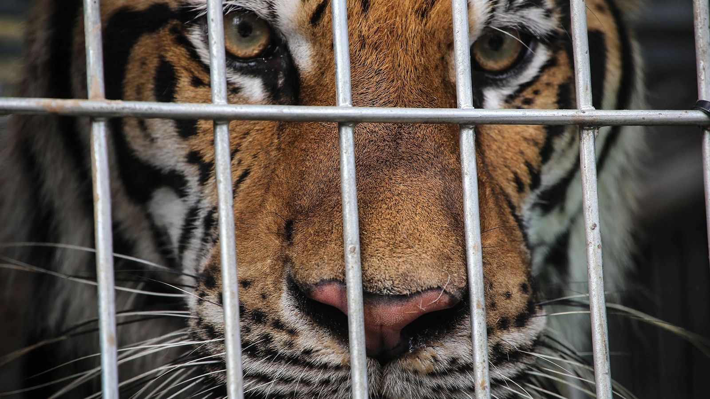

El mundo está sufriendo actualmente un evento de extinción masiva. En todo el planeta, las especies están desapareciendo a un ritmo alarmante como consecuencia de las actividades humanas. Según la Lista Roja de Especies Amenazadas de la Unión Internacional para la Conservación de la Naturaleza (UICN), casi una de cada cinco especies conocidas en la Tierra está en peligro de extinción. No se trata de un ciclo natural que ya ha sucedido antes y que seguirá sucediendo; esta vez está provocado por el hombre y se debe a nuestro propio comportamiento destructivo y a nuestra imprudencia como raza.
-
Los científicos todavía están tratando de comprender los efectos exactos del cambio climático en la vida silvestre y la biodiversidad, pero saben que es un factor importante a tener en cuenta. Muchas species ya han sido llevadas al borde de la extinción debido a la gran pérdida de hábitat, pero el cambio climático puede ser el último clavo en el ataúd para muchas más
-
La deforestación es la destrucción de bosques y zonas boscosas. Al ritmo actual, se estima que todas las selvas tropicales quedarán completamente destruidas para el año 2030. La tala de selvas y otras zonas boscosas tiene un profundo impacto en la biodiversidad. Muchas especies animales dependen de los bosques para sobrevivir. Cuando se destruyen esos bosques, esos animales corren el riesgo de extinguirse. Las selvas tropicales son algunas de las zonas más biodiversas de la Tierra y contienen una gran variedad de especies animales. Por desgracia, el ritmo de deforestación es demasiado elevado para mantener la biodiversidad de esos bosques.

-

El comercio ilegal de animales salvajes es una gran amenaza para la biodiversidad. Este comercio está impulsado por diferentes motivaciones, como la tradición cultural, la estética, la curiosidad y el beneficio económico. Al ritmo actual, se calcula que el comercio ilegal de animales salvajes llevará a la extinción a más de la mitad de las especies del mundo. Los animales salvajes suelen ser capturados en la naturaleza y luego vendidos en el mercado negro. Algunos de los animales implicados en este comercio están en peligro de extinción.
Combatiendo la extinción con educación
Las extinciones que se están produciendo actualmente no son cíclicas. No son un fenómeno natural que ocurra periódicamente, y no son inevitables. Son el resultado de actividades humanas destructivas, y pueden detenerse. Todavía estamos a tiempo de invertir esta tendencia, pero sólo si actuamos ahora. La mejor manera de combatir la actual crisis de extinción es reducir nuestra dependencia de los combustibles fósiles, lo que reducirá en gran medida la cantidad de emisiones de carbono en la atmósfera, frenando así el calentamiento global. Otra forma de combatir la crisis de extinción es proteger los hábitats de los animales en la naturaleza y asegurarnos de que tienen suficiente espacio para crecer y prosperar. También podemos ayudar a las especies en peligro de extinción criándolas en cautividad y devolviéndolas a sus hábitats naturales cuando sean lo suficientemente fuertes para sobrevivir por sí mismas.